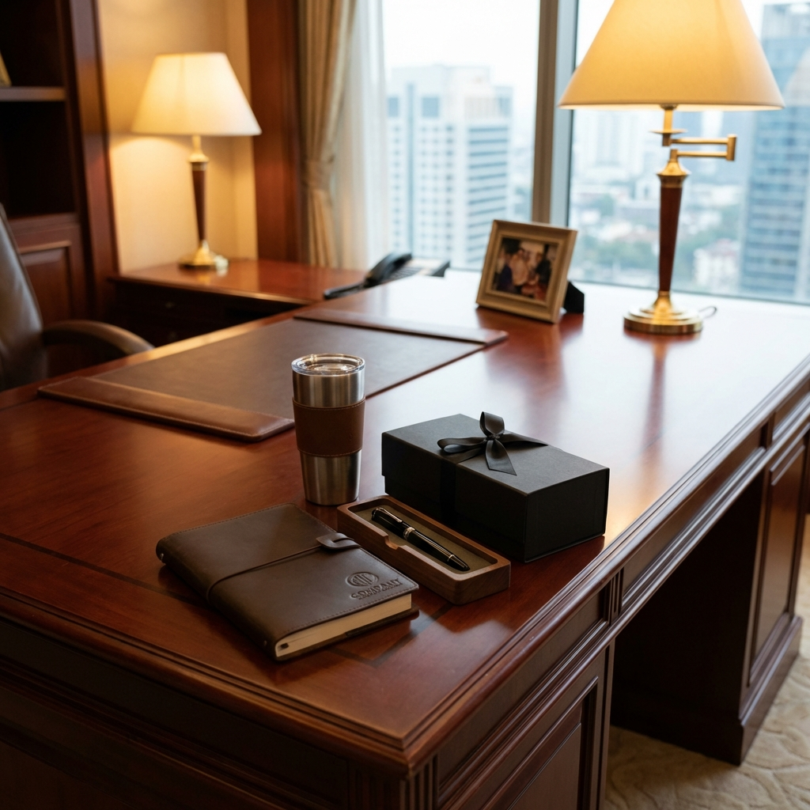

STRATEGI 2026
Rekomendasi Souvenir Kantor 2026: Tren Eco & Tech Dominasi Pasar
Prediksi lengkap tren merchandise tahun depan. Mengapa 'Sustainable Gift' dan 'Smart Gadget' akan menjadi standar baru corporate gifting.
Baca Selengkapnya